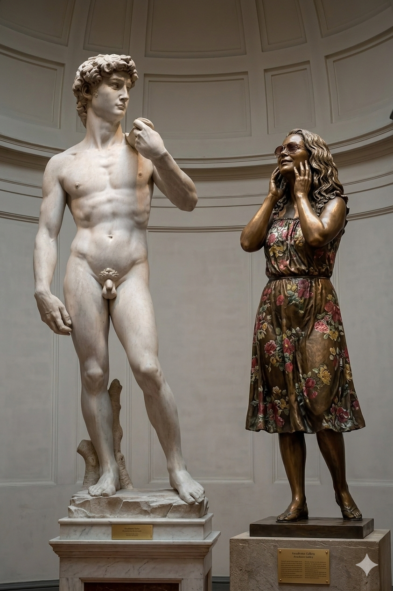
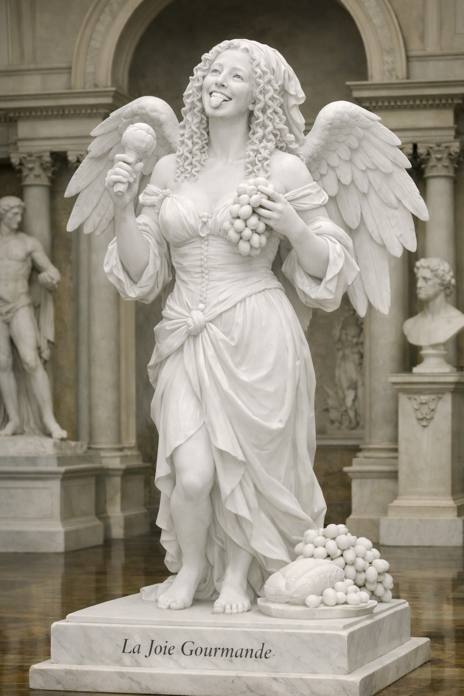
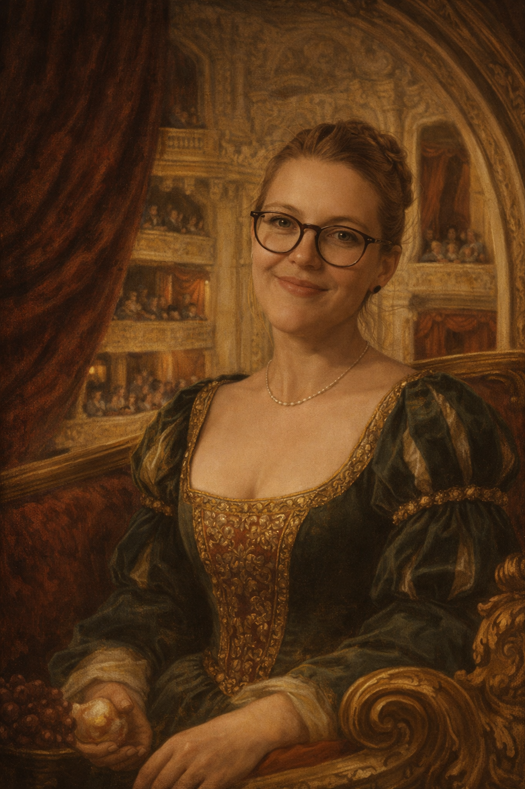
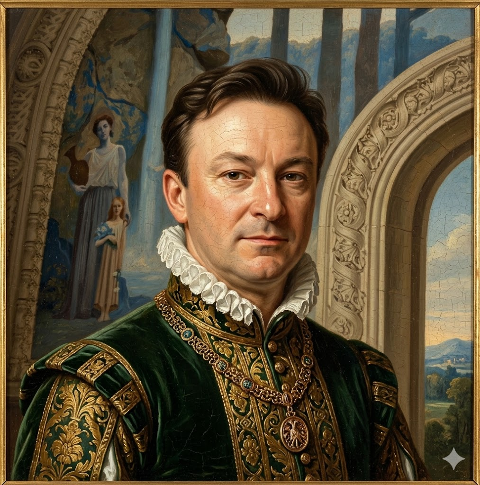

Léonard de Vinci
Peintre, inventeur, scientifique. Auteur de la Joconde et de nombreuses machines visionnaires.

Redécouvre une époque de lumière, d'art et de savoir, où l'être humain et la beauté sont au centre du monde.
Explorer
La Renaissance est une période de renouveau artistique, scientifique et culturel, qui commence en Italie au XIVe siècle et se diffuse dans toute l'Europe. Ce mouvement place l'humain au cœur de sa réflexion — c'est l'humanisme —, et renoue avec les idéaux de l'Antiquité grecque et romaine.
Cliquez sur les cœurs pour écouter une musique d'ambiance.




Peintre, inventeur, scientifique. Auteur de la Joconde et de nombreuses machines visionnaires.
Sculpteur et peintre, auteur du David et des fresques immortelles de la chapelle Sixtine.
Maître de l'harmonie, de la douceur et de la composition équilibrée. Auteur de L'École d'Athènes.